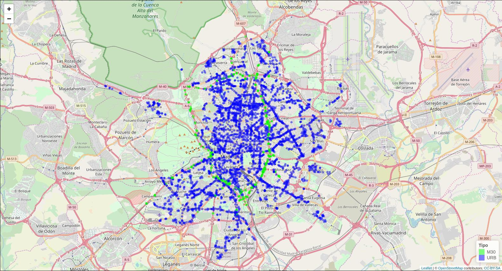
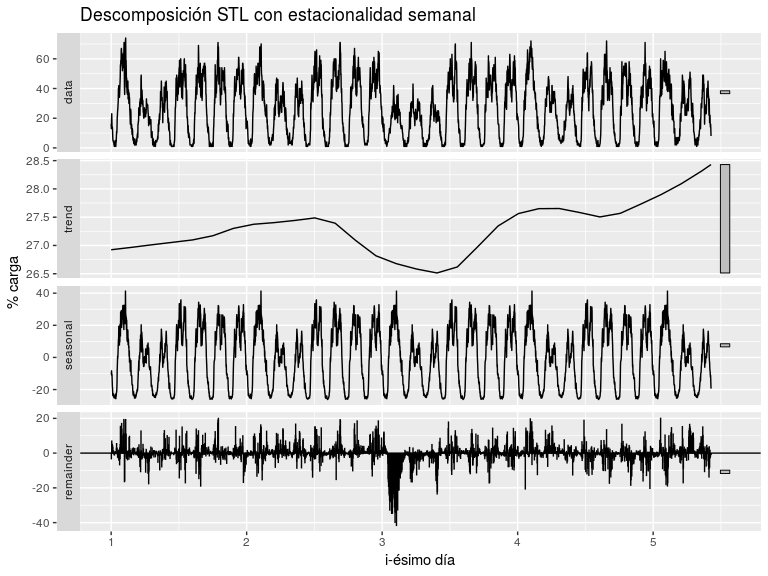
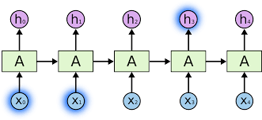
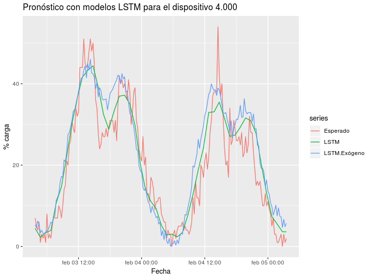

Notas sobre pronóstico del flujo de tráfico en la ciudad de Madrid
Andrés Mañas Mañas
2019-06-24
Introducción
Objetivos
- recopilar datos de tráfico en Madrid
- determinar propiedad objetivo
- pronóstico con métodos clásicos
- pronóstico con métodos basados en aprendizaje profundo
Datos
Dos conjuntos
- ubicación de los dispositivos de medida
- histórico de datos del tráfico desde 2013
DIRECCIÓN GENERAL DE GESTIÓN Y VIGILANCIA DE LA CIRCULACION
SUBDIRECCIÓN GENERAL DE REGULACIÓN DE LA CIRCULACION Y DEL SERVICIO DEL TAXI
DEPARTAMENTO TECNOLOGÍAS DEL TRÁFICO
ÁREA DE GOBIERNO DE MODIO AMBIENTE Y MOVILIDAD
AYUNTAMIENTO DE MADRID
Datos de localización
- 14 archivos publicados irregularmente en el tiempo
- tipos de dispositivo: M30 o URB
- 98,5% de dispositivos no cambian de localización
- el resto los descartamos del estudio
| tipo_elem | id | cod_cent | nombre | x | y |
|---|---|---|---|---|---|
| URB | 3840 | 01001 | Jose Ortega y Gasset E-O - Pº Castellana-Serrano | 441615.3 | 4475768 |
| URB | 3841 | 01002 | Jose Ortega y Gasset O-E - Serrano-Pº Castellana | 441705.9 | 4475770 |
| URB | 3842 | 01003 | Pº Recoletos N-S - Almirante-Prim | 441319.4 | 4474841 |
| URB | 3843 | 01004 | Pº Recoletos S-N - Pl, Cibeles- Recoletos | 441301.6 | 4474764 |
| URB | 3844 | 01005 | (AFOROS) Pº Castellana S-N - Eduardo Dato - Pl,Emilio Castelar | 441605.8 | 4476132 |
| URB | 3845 | 01006 | Pº Recoletos S-N - Villanueva-Jorge Juan | 441383.0 | 4474994 |
Ubicación geográfica

Datos de medidas
- 58 archivos publicados mensualmente
- 100 MB / fichero aprox. (zip)
- 800 MB / fichero aprox. (no zip)
- enero 2015 a octubre 2018
- 4.500 dispositivos aprox.
| id | fecha | tipo_elem | intensidad | ocupacion | carga | vmed | error | periodo_integracion |
|---|---|---|---|---|---|---|---|---|
| 4001 | 2018-09-01 00:00:00 | URB | 134 | 1 | 9 | NaN | N | 15 |
| 4001 | 2018-09-01 00:15:00 | URB | 122 | 1 | 8 | NaN | N | 15 |
| 4001 | 2018-09-01 00:30:00 | URB | 99 | 1 | 8 | NaN | N | 15 |
| 4001 | 2018-09-01 00:45:00 | URB | 111 | 1 | 9 | NaN | N | 15 |
| 4001 | 2018-09-01 01:00:00 | URB | 119 | 1 | 6 | NaN | N | 15 |
| 4001 | 2018-09-01 01:15:00 | URB | 85 | 1 | 7 | NaN | N | 15 |
Propiedades importantes
- intensidad: uso de la vía (vehículos/hora)
- ocupación: tiempo de ocupación de la vía (%)
- carga: f(intensidad, ocupación y capacidad) (%)
| id | fecha | tipo_elem | intensidad | ocupacion | carga | vmed | error | periodo_integracion |
|---|---|---|---|---|---|---|---|---|
| 4001 | 2018-09-01 00:00:00 | URB | 134 | 1 | 9 | NaN | N | 15 |
| 4001 | 2018-09-01 00:15:00 | URB | 122 | 1 | 8 | NaN | N | 15 |
| 4001 | 2018-09-01 00:30:00 | URB | 99 | 1 | 8 | NaN | N | 15 |
| 4001 | 2018-09-01 00:45:00 | URB | 111 | 1 | 9 | NaN | N | 15 |
| 4001 | 2018-09-01 01:00:00 | URB | 119 | 1 | 6 | NaN | N | 15 |
| 4001 | 2018-09-01 01:15:00 | URB | 85 | 1 | 7 | NaN | N | 15 |
Objetivo: carga
- significativa en sí mismo del estado de la vía
- fácilmente interpretable (%)
- informado en todos los dispositivos (no sólo M30, como vmed)
- fallas en los datos equivalente a otras propiedades
- intensidad: 4% errores
- ocupación: 8% errores
- carga: 5% errores
Ejemplo
Metodología
Etapas
- revisión bibliográfica
- Rob J. Hyndman - modelos clásicos
- Christopher Olah - redes neuronales
- …
- preparación de datos
- comprensión y saneado
- aprovisionamiento en BBDD
- programación de funciones de utilidad
Etapas (cont. 1)
- selección de modelos
- prototipado con combinaciones de parámetros, metaparámetros y arquitecturas
- combinaciones de estacionalidad
- agrupados por familia
- técnica de backtesting
- instante aleatorio para cada serie
- todos los modelos pronostican en el mismo punto
- registro exhaustivo de las realizaciones de todos los experimentos
Etapas (cont. 2)
- análisis de resultados
- selección del mejor modelo por familia
- selección del mejor modelo intra familias
- segmentando por series con mejor calidad de datos
- interpretación/explicación de los resultados
Modelos
Familia STL

Familia MSTL
Pronóstico STL y MSTL

Familia ARIMA
- ARIMA(p,d,q)
- AR: \(y_{t} = c + \phi_{1}y_{t-1} + \dots + \phi_{p}y_{t-p} + \varepsilon_{t}\)
- I: orden de diferenciación (serie estacionaria)
- MA: \(y_{t} = c + \theta_{1}\varepsilon_{t-1} + \dots + \theta_{q}\varepsilon_{t-q} + \varepsilon_t\)
- SARIMA(p,d,q,P,D,Q)\(_n\)
- ARIMA que incluye modelado de la componente estacional
- forecast::auto.arima()
Pronóstico (S)ARIMA
Familia LSTM

Pronóstico LSTM

Familia Mixta
Se han diseñado variantes de modelos mixtos:
- ajustando primero un modelo STL a la serie
- ajustando después un modelo LSTM a los residuos del modelo anterior
Pronóstico Mixto
Modelos probados
| Familia | Modelos |
|---|---|
| STL | 7 |
| MSTL | 4 |
| ARIMA | 2 |
| LSTM | 4 |
| LSTM Exógeno | 2 |
| Mixto STL + LSTM | 2 |
Todos los modelos se han probado en todas las series, constituyendo:
- 96.103 experimentos
- 2.126 horas de computación
Resultados
Mejor por familia
| Familia | Modelo |
|---|---|
| STL | STL W Reciente |
| MSTL | STLM DWM Reciente |
| ARIMA | SARIMA |
| LSTM | LSTM Agg4 Scale SD |
| LSTM Exógeno | LSTM-Exo DH Raw Scale Mean |
| Mixto STL + LSTM | STL+LSTM Agg5 Scale Mean |
RMSE
RMSE 5% gaps
Conclusiones
Objetivos cumplidos
- datos recopilados
- comprendidos
- pronósticos con modelos paramétricos y no paramétricos
- STL y STLM pronostican mejor a muy corto plazo (< 6h)
- LSTM iguala e incluso supera a corto plazo (< 48h)
- mayor importancia de la parte reciente de la serie
Trabajo futuro
- profundizar en las capacidades LSTM
- explorar:
- arquitecturas
- modelos de entrada múltiple
- variables exógenas
- agregaciones de los datos
- experimentar reduciendo la ventana “train”
- incorporar la componente espacial al modelo
- modelo único en infraestructura Big Data
- etc.
- arquitecturas
Recomendaciones
- muestra estratificada de series
- descarte de series con fallas excesivas
- series de laboratorio (sobre todo para LSTM)
Continuidad
- datos en AWS (S3)
- código en Github - @amanas
- 4 repos (utilidades, libro, wip y presentación)
- 2.000+ lineas de código de utilidad
- 280+ commits